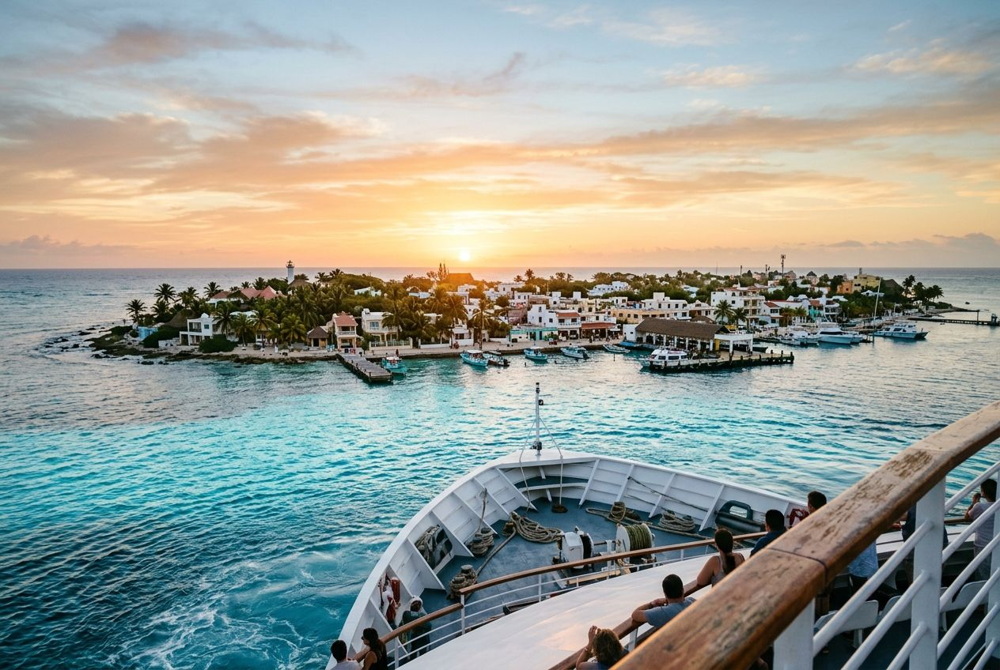
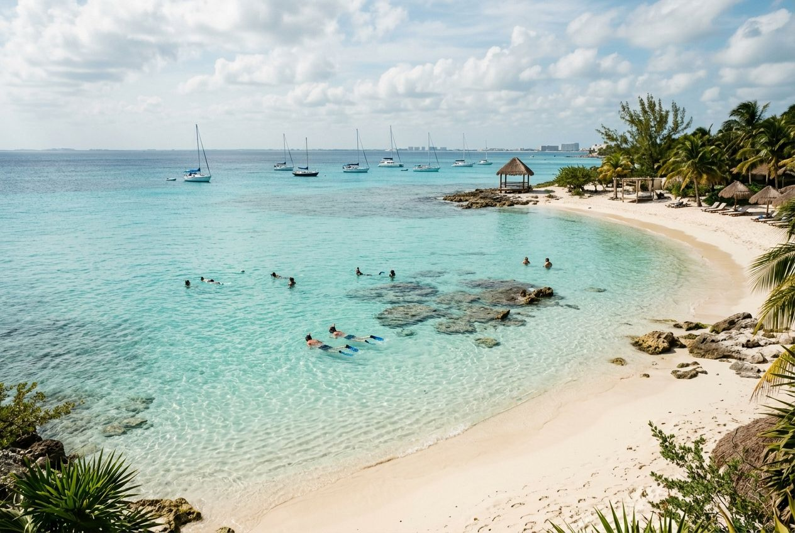
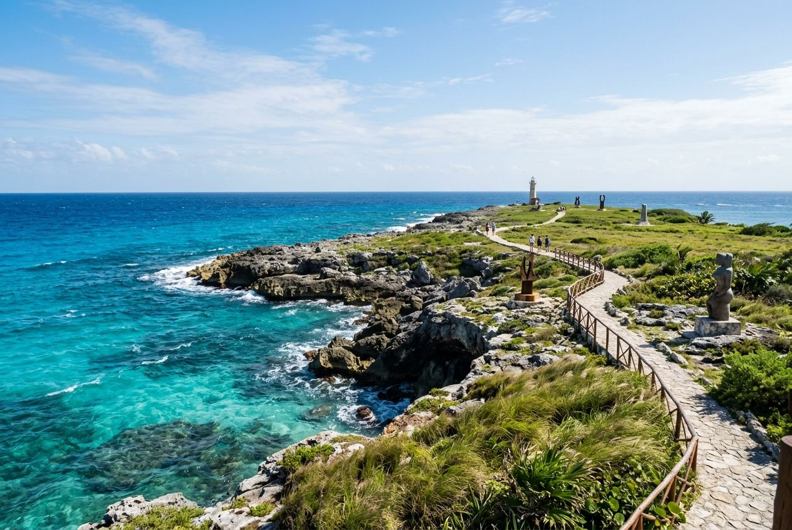

Flagship guide · Isla Mujeres
Best Things to Do in Isla Mujeres
The extended, actually-useful version: whale sharks, beaches, Punta Sur, snorkeling, golf carts, turtle sanctuary, Miguel Hidalgo, food, and the part of the island that starts after you stop treating it like one turquoise receipt.
This is the flagship things-to-do version: longer, sharper, and built for people who want whale sharks, beaches, Punta Sur, snorkeling, street life, and a better sense of the island than a rushed beach stop can provide.

The ferry ride is short enough to feel easy and long enough to let your mainland brain stop making unnecessary suggestions.
Fictional stories inspired by real life!
May include promotional or affiliate links.
The ferry terminal to Isla Mujeres is one of the great theaters of vacation optimism.
Everybody is holding a bag they packed with confidence. Everybody has a version of the day in their head. Everybody believes a small island will somehow simplify their personality.
A woman named Marisol is checking boarding flow with the serene expression of someone who has seen thousands of tourists turn “quick island escape” into an unnecessary logistics drama. She points toward the dock and says the single most useful thing I heard all night.
“People come here wanting easy,” she says. “The island gives them pretty first. The better part takes longer.”
That is the guide.
Yes, Isla Mujeres is only a short ferry from Cancun. Yes, Playa Norte still looks like a luxury screen saver that got promoted beyond its qualifications. Yes, the golf carts are part of the fun. Yes, whale shark season is a real draw. But if you stop there, you end up with the weak version of the island — the one made of proof, not memory.
So here is the stronger version: the classic ten things to do, expanded properly, with a little more realism, a little more taste, and a much lower tolerance for people who mistake a beautiful place for a checklist wearing flip-flops.



The ferry approach, the snorkel water, the Malecón, and Punta Sur: four different moods, same small island.
1. Swim with whale sharks if the season and your nerve both show up
Let us start with the headline act because pretending otherwise would be precious.
Swimming with whale sharks is the one experience that can take Isla Mujeres from “very nice beach island” to “you will annoy dinner companions by describing this too vividly for years.” Official Mexican Caribbean tourism still highlights whale shark season from May to September, and if conditions are good, this is the major-league thing.
The whale shark trip is not just a checkbox for brave snorkel selfies. It is a sea day. Weather matters. Currents matter. Your operator matters. The marine rules matter. Your stomach’s relationship with open water matters more than your ego wants to admit.
A guide named Julián tells me that people arrive imagining a spiritual documentary and forget the boat ride is part of the plot. “The shark is calm,” he says. “The tourists are usually the loudest animal there.” Correct. Devastating. Useful.
If you do this, do it seriously. Pick a conservation-minded operator. Assume nothing is guaranteed except water, movement, and the possibility of being humbled by a spotted creature the size of a bus with better emotional regulation than most humans.
2. Relax on the beaches, but do not let Playa Norte eat the whole itinerary
The beaches alone are worth the visit. Fair. I am not here to start a war with excellent shallow water.
Playa Norte is famous because it works. The water is calm, warm, bright, and offensively photogenic. Playa Sol is nearby. The north end is convenient. Boats sit offshore looking decorative and slightly self-satisfied. Beach bars exist for the specific purpose of preventing you from making any noble productivity choices.
What I want to add is this: the problem is not that Playa Norte is famous. The problem is that visitors mistake “best-known beach” for “whole island.”
Go. Swim. Float. Order something cold. Stare into the water like it owes you emotional clarity. Then leave before you become one of those people who confuse staying still with having understood a place.


Palm shade, pale water, and a calmer north-end pocket: the version of Isla Mujeres that convinces people to miss their original ferry back.
3. See Punta Sur at sunrise if you want the island before it starts flirting again
Punta Sur deserves its ranking. The sunrise idea is not hype. It is the correct instinct.
Punta Sur is where Isla Mujeres stops acting cute and starts acting ancient. The cliffs matter. The wind matters. The Ixchel association matters. The island’s prettiest north-end softness gets interrupted by edge, and that interruption is good for you.
If you arrive here early, the place feels like geography. Later, it begins to feel like an attraction. Geography is better.
A taxi driver named Tomás laughs when I ask if the first-sunrise-in-Mexico line still works on people. “Of course,” he says. “Humans love the idea of being first at something they do not control.” That is such a rude sentence. Also, it improves Punta Sur rather than diminishing it.
4. Snorkel or dive, but pick the mood you actually want
A useful breakdown is this: El Farito for easier snorkeling, Los Machones for deeper water confidence, Garrafón for a more packaged marine experience, and extra value if your whale shark trip includes a snorkel stop.
I would add MUSA to the emotional map. The underwater museum still promotes dives departing from Isla Mujeres, and if you like your sea time with a surreal side order of art and submerged human forms, it is a compellingly strange choice.
But not every day needs a ticketed marine agenda. Some days want a boat. Some want reef structure. Some want one calm north-end pocket, a mask, and enough unstructured time to remember that the ocean does not always need a branded itinerary.
Choose accordingly. The water is not a spreadsheet.
5. Rent a golf cart or moped if you would like your island logic delivered with wind
Golf carts rule the road here. They are basically Isla Mujeres’s answer to the question, “What if transportation were also a mild personality disorder?”
Golf carts are fun because the island is small enough to make them feel inevitable and silly in equal measure. Mopeds are fun until they become a memory about why upgrading the machine might have been the better financial decision.
One rental guy, who introduces himself only as Rafa and seems to consider surnames a mainland habit, tells me, “People drive like the island forgives everything.” He says this while watching someone reverse into a curb with inspirational determination.
If you rent wheels, understand what they are for: not speed, just sequence. They let you connect north beach, south cliffs, middle island, side roads, and the little accidental pauses that make the day worth remembering.
6. Visit the turtle sanctuary because not every island memory needs to perform
La Tortuga Granja on Sac Bajo remains one of the island’s gentler stops, especially if your day needs one pause that is quieter than the beach circuit.
This is not your grand climax activity. It is not meant to be. It is the kind of visit that resets the tempo of a beach-heavy day and reminds you that islands are ecosystems before they are vacation concepts.
Some travelers need one thing on the itinerary that is quiet, small-scale, and emotionally disarming. Baby turtles are overqualified for that job.
7. Walk Avenida Miguel Hidalgo at night because day islands and night islands are different species
Walk Miguel Hidalgo at night. Even if you are not hungry. Especially if you think you are not hungry and are wrong.
The street is part food corridor, part social current, part island punctuation mark. Dessert appears. Music appears. People linger longer than they intended. Conversations get better because nobody is trying to prove a beach still looks good after dark.
A vendor named Lorena is rolling marquesitas with the dead-eyed precision of somebody who has fed every version of a tourist. “At night,” she says, “the island stops posing.” That is when I like it most.
8. Yes, get the sign photo, you enormous adorable cliché
There are two popular Isla Mujeres signs — the colorful east-side version and the west-side whale-shark version. I support both. Travel should not be so self-serious that you cannot occasionally participate in a perfectly harmless ritual of public obviousness.
Just do not confuse the sign with the story.
The point of the sign photo is not memory itself. It is a bookmark. A little bright piece of proof that says, “Yes, I was here.” Fine. Good. Charming. Now go somewhere else on the island where nobody built a formal backdrop for your arrival.
9. Do the adventure-park version only if you actually want park energy
Garrafon Natural Reef Park and Parque de los Sueños are the main packaged-thrill options for ziplining, kayaking, snorkeling, and the version of the day where the island has already been pre-edited into a menu.
There is nothing morally wrong with wanting convenience and harness-based joy.
But I would argue this is optional Isla Mujeres, not essential Isla Mujeres. If you want a park day with an ocean view, fine. If you want the island itself, I would spend that energy on Punta Sur, water time, a slower cart lap, or just staying long enough for the north end to stop shouting.
10. Eat properly, because a small island with bad meals would be a hate crime against atmosphere
Ending the list with food is emotionally correct. The beach may be what got you here. Dinner is part of what convinces you the island has depth.
Madera Food and Art, Reuben’s, Taqueria Medina, and the food carts make a good spread. The principle matters more than the exact list: do not treat the island as if only one kind of meal counts.
Eat something by the water if the mood is coastal and dramatic. Eat downtown if the mood is louder and friendlier. Eat from a cart if the street smells smarter than your reservation. Try marquesitas because refusing local street dessert on principle is behavior I cannot defend.
The island is small enough that hunger becomes part of the rhythm quickly. Use that. Let the walking choose for you sometimes.
Bonus: how to get there and move around without becoming a ferry cautionary tale
Ultramar is still the simple public answer from Puerto Juárez. The company’s current route notes still say to arrive thirty minutes early, warn that schedules and rates can change without notice, and keep the non-refundable ticket language. They also note validity windows and baggage allowances, which is practical information disguised as boring website text.
Translation: do not arrive late and then act shocked that the boat left on purpose.
Once on the island, walking works for the north end. Taxis fill the gap if you are lazy, sun-tired, or making a sunrise move toward Punta Sur. Carts make sense if you want the whole island in one day. Mopeds make sense if you trust your balance and your optimism equally, which I do not always recommend.
The thing you will actually remember
Maybe it will be the whale shark, because in fairness that is difficult to beat.
Maybe it will be the exact color of the water at Playa Norte when the light lands correctly and the whole beach looks like somebody has adjusted reality upward two notches.
Maybe it will be the wind at Punta Sur, or the soft public theater of Miguel Hidalgo after dark, or a cart ride that felt much smarter at the beginning than it did halfway through a turn.
But the part I suspect will stay is simpler: the island getting better the moment you stop trying to finish it.
That is the trick with Isla Mujeres. It is easy to access, easy to romanticize, and slightly harder than it looks to do well. Which is exactly why it is worth writing about properly.
Marisol sees me back at the terminal and asks the question people always ask when they know the answer will expose your standards.
Was it worth the trip?
I tell her the same thing I will tell you: yes, absolutely — but only if you let the island be more than the photo it sells first.
— Rose 🦞
🧰 Practical Stuff
Best one-day version: First ferry, Playa Norte early, Punta Sur before midday, then either snorkeling or a slower Miguel Hidalgo / side-street evening if you are staying later.
Whale shark reality: Official Mexican Caribbean guidance currently lists May through September. Book with a conservation-minded operator and keep your expectations flexible because sea conditions, weather, and wildlife are not customer service employees.
Ferry move: Puerto Juárez remains the simplest crossing. Arrive at least 30 minutes early, especially in high season, and verify the latest Ultramar schedule before travel.
Cart vs taxi: Use a golf cart if you want the whole island in one day and enjoy a little wind with your decision-making. Use taxis if you only need one or two directional commitments and would rather not become part of island traffic folklore.
Where to linger: Playa Norte for the obvious beauty, Punta Sur for the dramatic edge, east-side Malecón for morning honesty, and Miguel Hidalgo for night energy and dessert-based life choices.
Who this fits: Cancun travelers, Costa Mujeres travelers, and anyone who likes islands that are easy to reach but still complicated enough to reward attention.
📋 Visa & Legal
Visa basics: US, Canadian, UK, and most EU travelers usually do not need a visa for short tourist stays in Mexico, but entry rules can change. Verify your own nationality-specific requirements with Mexico’s official immigration sources before booking.
Passport and entry: Travel with a valid passport for the full stay and keep a buffer beyond that when possible. You may be asked for accommodation details, onward travel, or proof of funds.
Money: Cards are common in tourist-facing places, but pesos still matter for small vendors, taxis, tips, and all the situations where a terminal suddenly decides to become philosophical.
Safety: Mexico’s emergency number is 911. Respect marked swim areas, marine-life rules, weather changes, and vehicle caution — a tiny island does not make bad decisions less expensive.
Official sources: Instituto Nacional de Migración, Mexican Caribbean: Isla Mujeres, Ultramar routes and departures. Research before you book.
Disclosure: Rose's Travel Dispatch may include affiliate links. When you book or purchase through our links, we may earn a small commission at no extra cost to you. This helps keep the dispatch free and the hot springs warm. 🦞
Related Isla Mujeres reads
Where Is Isla Mujeres?
The clean location answer if you want the geography, ferry crossing, and north-of-Cancun context first.
Read the location answer →Isla Mujeres Complete Guide
The broader planning page for ferries, timing, neighborhoods, where to stay, and how to structure the trip.
Open the full guide →Companion dispatch
The moodier narrative version if you want the island as a story instead of a ranked guide.
Read the dispatch →Fast-answer version
The quickest route for ferry logistics, golf carts, snorkeling, timing, and trip-fit questions.
Open the quick-answer page →